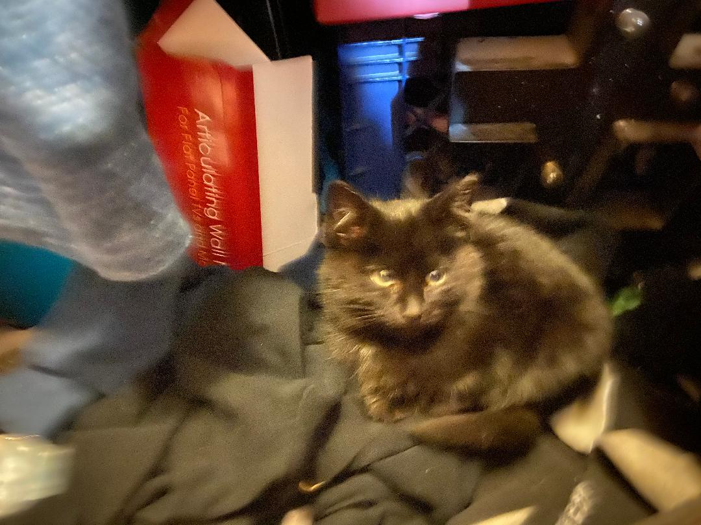

The first time I saw the kittens, they were coming out of the dumpster and running when they heard my car pull in to my coworker's road. Although my coworker fed them everyday, it was nowhere near as much as the whole family needed. My coworker was carrying on her deceased father's daily ritual of feeding the feral cats that live nearby. She doesn't even like cats! But she loved her Dad. I'm grateful that she took care of what turned out to be the nicest group of cats I'd ever met.
When I had the cats in my possession and trying to figure out my game plan, I was both socializing them and finding homes for them. Since they were such a close family, I knew I wanted to keep them in pairs at the very least. I had researched how many weeks old to give kittens away and wanted to play it safe since I didn't know their exact age, so I used their estimated age of 7 weeks and kept them with their mother for another few weeks. One of the homes for the kitten's fell through, and while I was keeping the kittens with their mother I became attached to the sweetest little kitten who would be named Pepe. He would flop over onto his belly to let me pet him, and he was the first cat in my whole life who laid on my lap. As for the other cats, all except one kitten went to homes in pairs, except the mother who went with her two teenage daughters who she plays with all the time.